NusaTravela
An online travel agent app for the holiday destinations near you, and the end of queuing for a ticket when you get there.
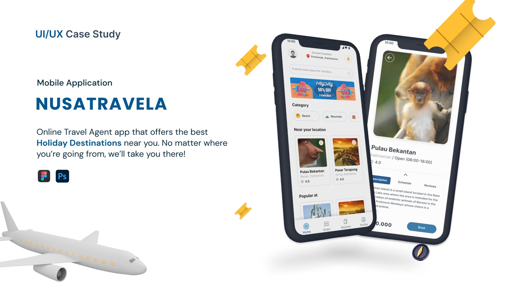
The brief
Travellers need a quick way to find a holiday destination and buy the ticket before they arrive, so they never have to stand in line for it.
The problem
Travellers need a way to quickly access and order a ticket to their chosen destination, so they don't have to worry about queuing when they get there.
The goal
An app that lets travellers access information about, and order tickets to, the holiday destination of their choice.
Problems, answered
| No. | What we found | What NusaTravela does |
|---|---|---|
| 01 | “Hidden gem” destinations rarely appear in similar OTA apps. | Lists hidden-gem destinations with help from local government. |
| 02 | Users want to know what's nearby. | Detects nearby destinations from the device's GPS location. |
| 03 | Users need to know their trip's Covid-19 regulations. | Builds in PeduliLindungi for national pandemic regulations. |
| 04 | Queuing for an on-the-spot ticket is tiresome. | Gets the trip, and the ticket, ready wherever you are. |
Six weeks, five phases
Empathize → Define → Ideate → Prototype → Test
Problem statement, surveys, interviews
Empathy map, SWOT, affinity map, personas
Competitor analysis, journey map, insights
Storyboards, user flow, card sorting
Wireframes, low-fi, usability testing, hi-fi
Prototyping, presentation
What the research said
An online survey and offline interviews about how people use OTA apps, targeting 20–40-year-olds. Interview answers were affinity-mapped into goals, insights, activities, pain points and features.
- Android users
- 93%
- Students
- 69.7%
- Social-first
- 48.5%
- Traveloka
- 51.5%
of survey respondents use Android, so the app had to work for them first.
of respondents were students, the core audience.
find out about destinations through social media.
already use it because it's easy. That's the bar to clear.
Survey respondents skewed young: 78.8% were 11–20, and 69.7% travel less than once a month.
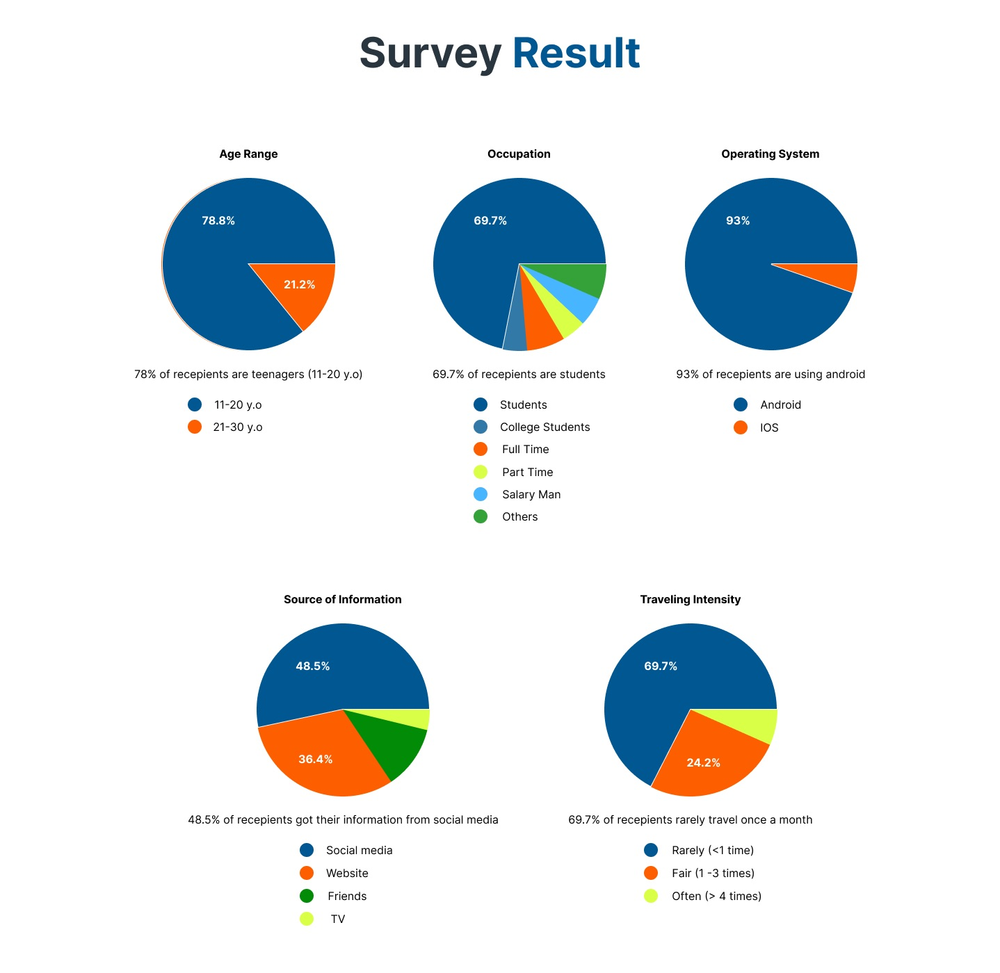
“I'm just ordering a ticket for one person. Why are there so many steps to go through?”
Interview participant, from the empathy map
Pain points
- 01
Irrelevant recommendationsHard to find anything worth visiting; what's shown doesn't fit.
- 02
Unstable pricesPrices go up and down, so users are never sure what they'll pay.
- 03
Information overloadToo much piled-up information reads as redundant and bores people.
- 04
The wrong walletUsers want to pay with the e-wallet already on their phone.
From interviews to insight
Affinity map and empathy map
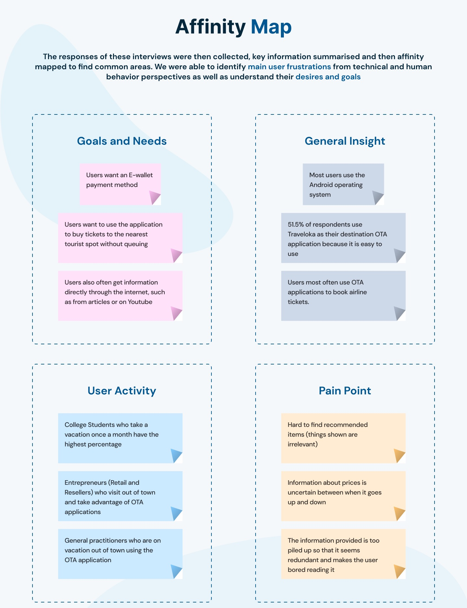
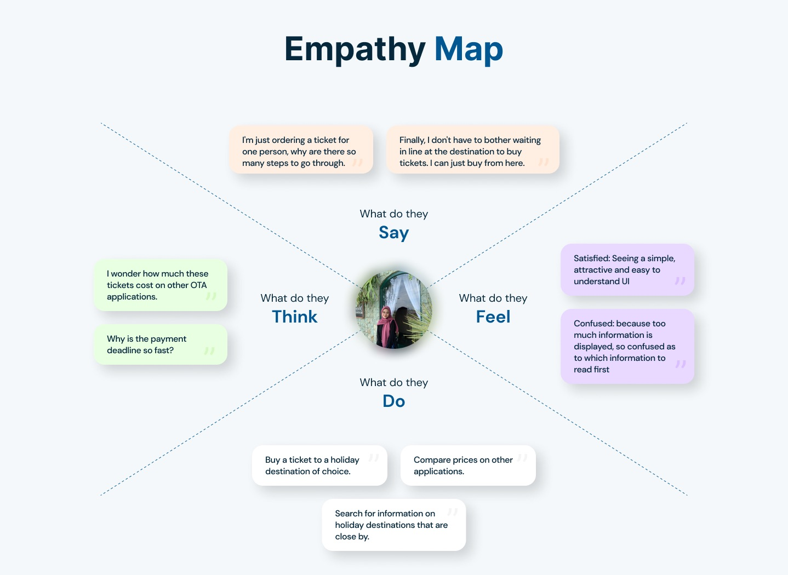
Against the field
Three leading OTA apps in Indonesia
| Traveloka | Klook | tiket.com | |
|---|---|---|---|
| Order flow | Lots of steps to get through | Straightforward, easy to follow | Fewer payment methods |
| Features | Too many on the home screen | Good use of scrolling for new users | Incomplete |
| Typography | Good overall | Some text too small to read | Good |
| Icons & buttons | Non-uniform icons; some buttons too small | Good | Non-uniform icons, colours, sizes and radii |
| Images | Good | Some destinations have none | Good |
The takeaway: Klook's short order flow, without Traveloka's crowded home screen.
Who it's for
Vivi Imamah
- Age
- 22
- Study
- Final year, Brawijaya University
- Lives
- Malang, East Java
- Apps
- WhatsApp, YouTube, Instagram, Twitter
“I want an app I can use to book tickets and trips to holiday destinations near me.”
Vivi escapes the pressure of her final year with trips to nature. Her worst experience was a two-hour queue to get into an attraction, and she researches across several social apps before going because information is thin. She wants to pay with the e-wallet on her phone, like DANA or OVO.
Vivi's journey
Mood across the four steps of booking a trip
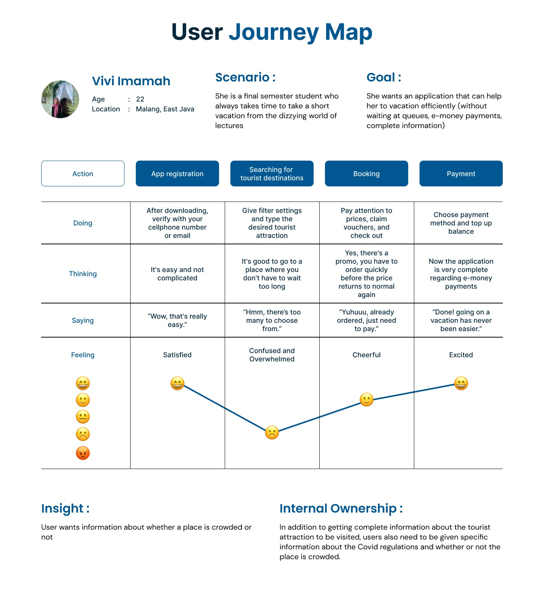
Insight: users also want to know whether a place is crowded, and what its Covid regulations are.
Tested, then changed
We tested the low-fidelity prototype with real users, tracking time on task, error rate and System Usability Scale. Three problems came out of it, and each changed the design.
-
01
Found
Users got confused choosing a traveller profile to finish payment.
Changed
Profiles became distinct cards, and “Add new” moved up beside the heading.
-
02
Found
When choosing a date, users tapped the text field, not the calendar icon.
Changed
The calendar now opens from the text field itself.
-
03
Found
Users struggled to find the button to post a review.
Changed
“Submit Review” moved below the text field; the tab bar was removed on this sub-screen.
The home screen's destination cards were also refined.
Before & after
Low-fidelity prototype → final design
Before
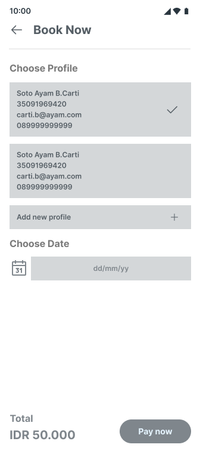
After
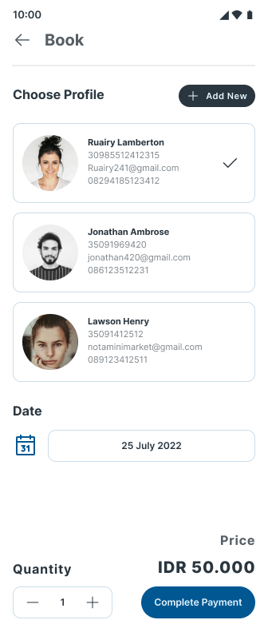
Fig. 6: Booking. Profiles become cards, “Add New” moves up, the date field opens the calendar. Fixes 01 & 02.
Before
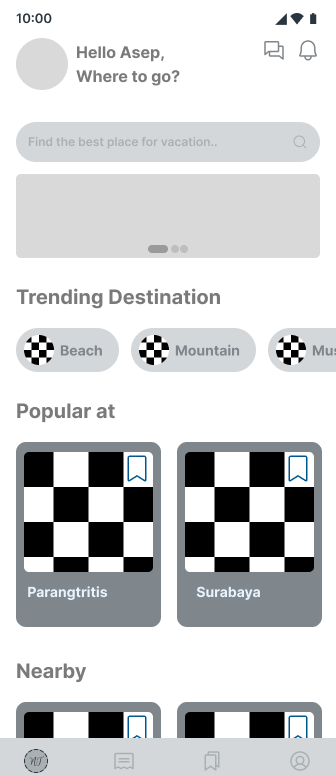
After
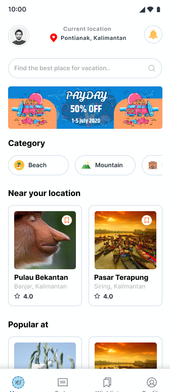
Fig. 7: Home. Current location up top, and “Near your location” cards with rating and place.
Screens from the original Behance case study.
The system underneath
One library of rules and components so the three UI designers could build screens in parallel without drifting apart.
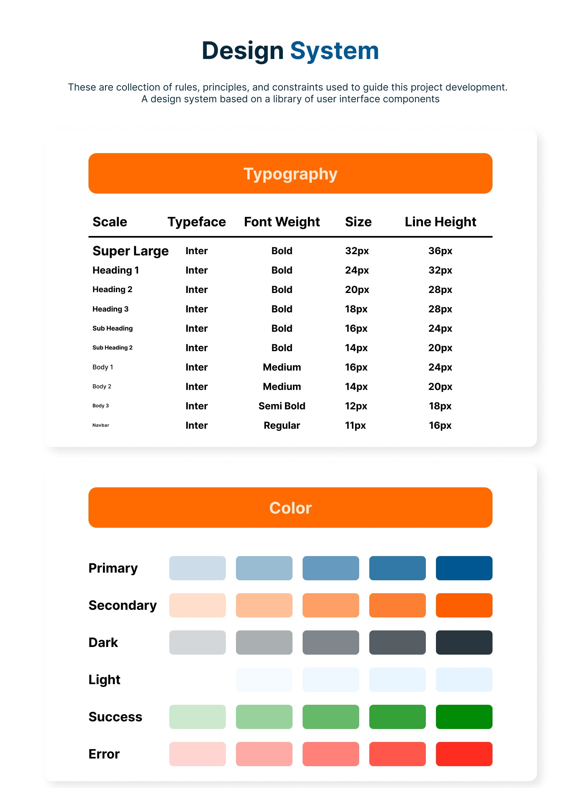
What shipped
A high-fidelity prototype covering the whole trip, from onboarding to the QR ticket at the gate.
- Onboarding
- Login & sign-up
- Home: nearby & popular
- Destination detail
- Booking & profiles
- Payment: e-wallet & virtual account
- Processing & success
- Orders: ongoing & history
- Ticket with QR code
- Reviews
- Wishlist
- Profile & help centre
Draft note: the Behance post says testing measured time on task, error rate and SUS, but doesn't publish the numbers. If you still have them, a before/after figure here would be the strongest line on the page.
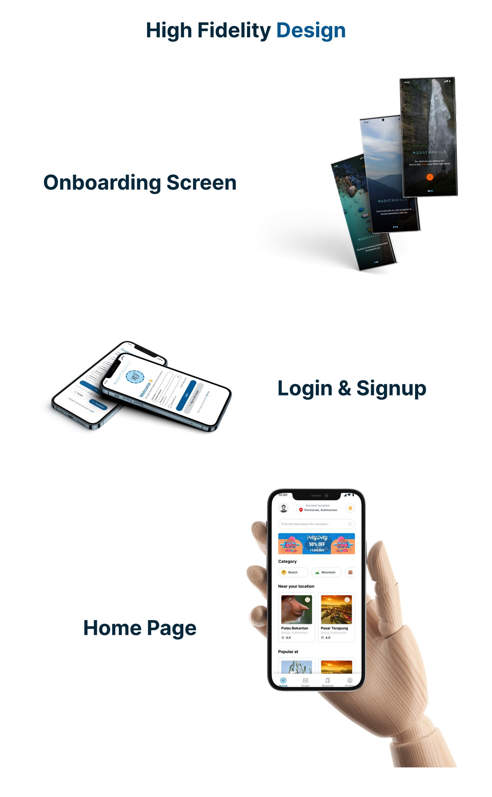
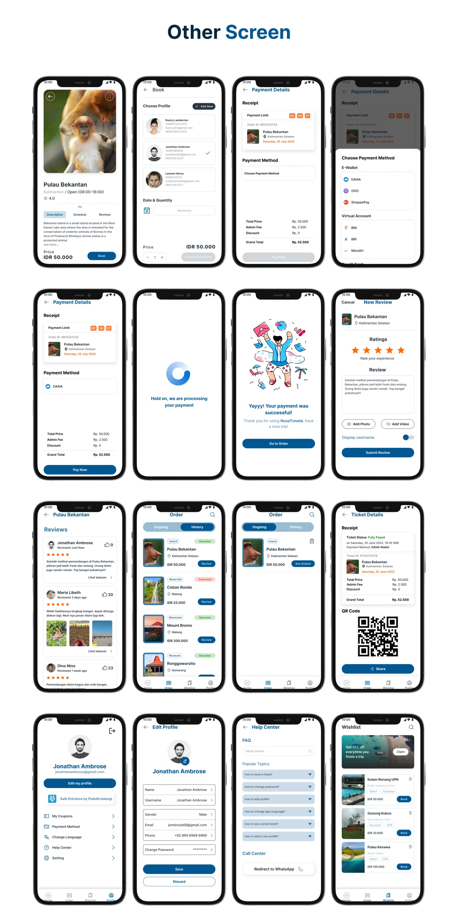
The team
- Andi
- UX Lead, UX Researcher
- Vera
- UX Researcher
- Ande
- UI Designer
- Iwang
- UI Designer
- Rizal
- UI Designer